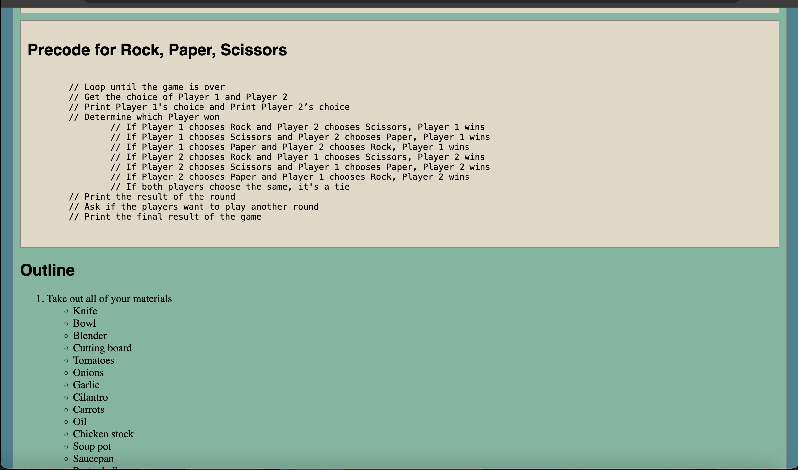

Lab 4 - Psuedocoding and Problem-Solving
Challenge
Pseudocode before actually coding. Make a list and break it down into steps and sub-steps. Pick a computer game and do the same (pseudocode into precode).
Problems
Figuring out how to break down the steps of a computer game was pretty challenging. We took the example given on the tic-tac-toe game and manipulated the main steps to fit with our game. Then, using Bing AI, we rephrased the psedocode.
Results
lists are below
Precode for Rock, Paper, Scissors
// Loop until the game is over
// Get the choice of Player 1 and Player 2
// Print Player 1's choice and Print Player 2’s choice
// Determine which Player won
// If Player 1 chooses Rock and Player 2 chooses Scissors, Player 1 wins
// If Player 1 chooses Scissors and Player 2 chooses Paper, Player 1 wins
// If Player 1 chooses Paper and Player 2 chooses Rock, Player 1 wins
// If Player 2 chooses Rock and Player 1 chooses Scissors, Player 2 wins
// If Player 2 chooses Scissors and Player 1 chooses Paper, Player 2 wins
// If Player 2 chooses Paper and Player 1 chooses Rock, Player 2 wins
// If both players choose the same, it's a tie
// Print the result of the round
// Ask if the players want to play another round
// Print the final result of the game
Outline for Mexican conchas soup
- Take out all of your materials
- Knife
- Bowl
- Blender
- Cutting board
- Tomatoes
- Onions
- Garlic
- Cilantro
- Carrots
- Oil
- Chicken stock
- Soup pot
- Saucepan
- Pasta shells
- Salt
- Cute the vegatbles
- Dice 2 tomatoes into 4 slices
- Cut onion into quarters
- Peel the garlic clove
- Cut the carrot into small bites
- Place a cup of water, tomatoes, onions, and garlic into a blender
- Add chicken stock/chicken bouillon and blend until you have a smooth sauce
- Set aside
- Boil water in a large soup pot
- Add a teaspoon of salt to the water
- Once the water is boiling add in the pasta shells
- Wait 7 minutes or until pasta shells are soft
- Drain most of the water
- Leave 4 tablespoons of water in the pot with the pasta
- In a sauce pan add oil
- Leave until the oil heats up
- Add in the veggies and sauce
- Add in tomato sauce, carrots, and cilantro sprigs
- Pour in 4 cups of chicken stock and bring to a boil over medium heat
- Add cooked pasta shells to the pot and season with salt to taste
- Let simmer for about 8-10 minutes until vegetables are well cooked
- Turn off the heat and serve immediately in bowls